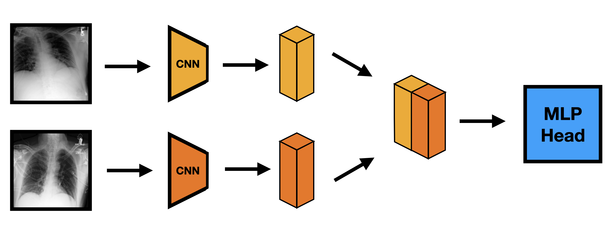

Troy Serapio • August 7, 2023
Siamese neural networks, also called twin neural networks, are designed for the comparison of two objects. This architecture is commonly used in image comparison tasks such as verification, duplicate detection, and anomaly detection; in fact, one of the first known uses of this architecture is signature verification.
From here, we attempted to use Siamese neural networks to detect changes between a series of patient’s chest X-rays (CXRs). More specifically, we will focus on the progression of pleural effusion on the chest X-rays. We will use ImaGenome dataset, which is derived from the MIMIC-CXR dataset. The ImaGenome dataset is a collection of temporal series of CXR images with descriptions.
What are Siamese neural networks, exactly?
The Siamese neural network is one neural network that take in two (different) input vectors. In our use case, these input vectors are two CXR images.

These input vectors are then fed into the convolutional neural network, and the neural networks generate two separate embeddings (vectors that are far easier to compare to each other). This could be thought of as the model outputting its own version of the original input.

Input to embedding
These output vectors are concatenated to each other and ran through a multi-layer perceptron to come up with a prediction (eg. whether or not a change was detected). This prediction is then trained on weighted cross-entropy loss, with an Adam optimizer to tweak its weights. This mechanism allows for the model to form a prediction based on two separate inputs, which allows us to track the progression of pleural effusion between two CXR images.
Output Discussion
| ImaGenome Dataset | Not Changed | Improved | Worsened |
|---|---|---|---|
| Not Changed | |||
| Improved | |||
| Worsened |
Here we may see that the Siamese neural networks' accuracy is slightly better than a random guess. In reality, this is due to the fact that it seems to always overgeneralize into always assuming that the CXR image is in the “no change” category. Overgeneralization is very common especially in tasks like this, which is why a multi-layer perceptron is used (fully-connected layers). In addition, a smaller learning rate helps with making the model slightly better at predicting the changes.


Another problem with CXR images and their description is its complexity with the many different organs that may influence the result, thus making it a much harder task. In addition to that, radiologists may sometimes disagree with their results, with one saying “nothing significant changed” while another saying otherwise.
Last Words
In conclusion, siamese neural networks offer a promising approach to detecting changes and tracking progress in medical imaging, especially in chest X-rays.
This powerful technology can help medical professionals identify and intervene in conditions such as pleural effusion and other pathologies, perhaps even before they become symptomatic.
The future of medical imaging with artificial intelligence is bright, and we are only scratching the surface of what is possible.
Thank you very much for reading!
Resources and Links
- GitHub Repository on Siamese Neural Networks
- ADL4CV:DV Lecture on Siamese Networks
.